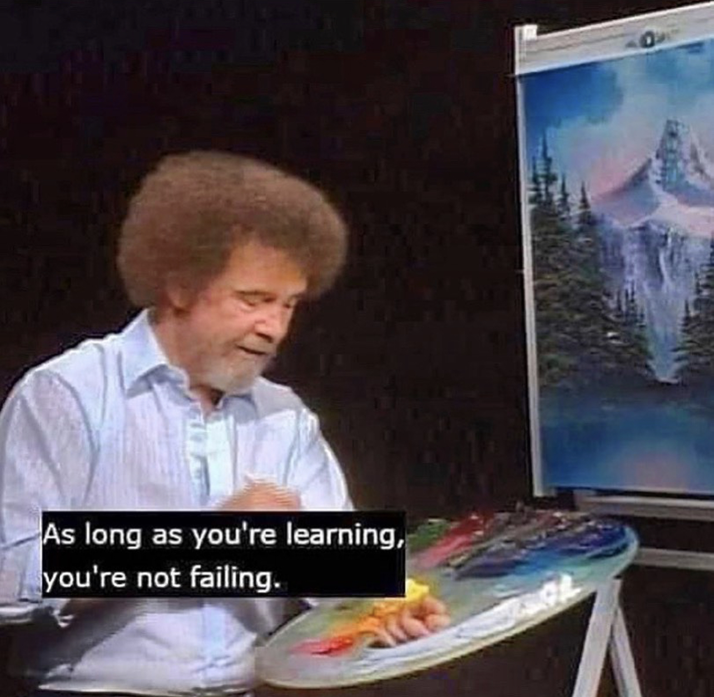

It's a fine world, though rich in hardships at times. — Larry McMurtry
I’m a clinician at The Center for Psychotherapy in Santa Barbara. I practice with an orientation toward Depth and psychodynamic modalities, but I’m curious about every avenue that makes suffering meaningful and vitality possible. Poetry is medicine. Beauty is medicine. So is kindness and wonder.
I do not see myself as a healer. I’m not exactly a helper, either. I believe that psychotherapists are witnesses. We bear witness to the full spectrum of human well-being, from despair to rejoicing. We provide attention (“Absolutely unmixed attention is prayer,” Simone Weil wrote), and in doing so, companion other human beings in a mysterious process of change, emergence, and efficacy.
The word therapy comes from the ancient Greek word, therapeuein, meaning to attend, to accompany. In the temples of Asclepius (Greek god of healing, and threshold figure between suffering and renewal), people in states of inner affliction came to sleep in caves, hoping for dreams that might offer guidance. The individuals who tended these spaces and recorded the dreams were therapeutae in the original sense of the word. Their task was to keep the conditions in which something meaningful could emerge, and to stand alongside long enough for life to move again, for the soul to peek its head from behind the curtain.
I believe the role of the psychotherapist of today is much like the role of the therapeutae of old, not fixing, but companioning, and that psychotherapy itself, much like life, is most deeply about learning how to love and be loved. I don’t have the answers (most of the time), but I trust that you do (even if you think that you don’t), and I will provide witness, unmixed attention, and curiosity as you discover them.
Please reach out here if you’re interested in working together.